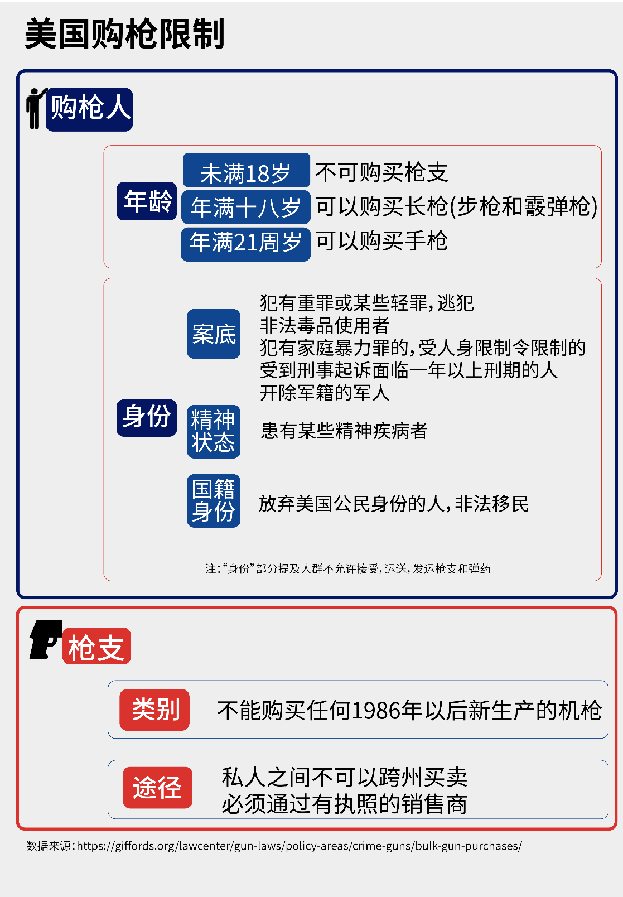

引言：2021年11月9日下午，一名刚从芝加哥大学毕业的24岁中国籍留学生在芝加哥大学校园附近人行道行走时遭遇持枪抢劫，胸部中弹，送医院后不治身亡。今年1月，芝加哥大学一名30岁中国籍在读博士生在校园附近公寓的停车场内，无辜遭枪手射击不幸去世。这些无辜的青年本可以度过和平安宁的一生，却遽然倒在枪下，令世人痛心。人们不禁要问，美国的枪支暴力何时才能停止？
本文将用可视化图表反应当下美国枪支情况，并探究美国持枪率与犯罪率直接的关系。
设于日内瓦的独立研究项目“小型武器调查”发布的一份报告显示，日内瓦高等学院推估，美国拥有3.93亿把民用枪支，相当于全球8.57亿把民用枪支的46%。而要知道，21年美国人口普查局的调查结果显示，美国的人口为3.28亿，仅占世界人口总数的4.28%，该比例不足美国民用枪支占世界比的十分之一。
3.28亿的人口，3.93亿把民用枪支，这个数据意味着，每100名美国人就有120把民用枪枝，此比率远远高于第二名福克兰群岛的62把，以及第三名叶门的53把。
我们查找了1973-2020年美国持枪人口占总人口的比例，并绘制成了一幅折线统计图。可以看到，近五年，美国持枪人数比例又呈现一个新的小高峰。据盖洛普(Gallup)的调查则显示，2020年，44%的美国成年人居住在有枪枝的家庭，三分之一的成年人拥有自用枪枝。而据美国全国射击运动基金会（NSSF）估算，2021年美国人共购买了1850万支枪，这个数字仅次于2020年的2100万支。这意味着在2021年，平均每分钟就卖出了35支枪。
枪支管制的相关政策一直是美国政治中的争议议题。持枪权的支持者和枪支管制的支持者（不等同反对持枪权）在该问题上分歧很大，经常在枪支管制、枪支造成和预防犯罪、公共安全等问题上争论不休。
美国宪法第二修正案明文规定：“纪律严明之民兵乃保障自由州安全之所需，人民保有及配带武器之权不得侵犯。”这是美国人合法持枪最根本的法律基础。不过，即使持枪是权利，但也并非人人都有这个资格，美国购枪到底有什么限制呢？

“在美国买枪有多容易？背景检查和等待的时间可能会耽误一点时间——但只有一点点而已。”CNN曾经戏言道，在某些州离婚都要等上6个月，但在美国大部分地方买枪没有等待期，即便是有等待期的州，也只需几天而已。
而在美国买枪又有多便宜呢？在拉斯维加斯枪击案的枪手帕多克（Paddock）所住的酒店发现的手枪价值约200美元，相当于一个Chromebook笔记本电脑的售价。疫情以前，一盒9毫米子弹的价格是12美元（约合人民币75元），而在涨价最疯狂时，也只被卖到了40—60美元（约合人民币250元至380元）。
纽约市射击靶场的教练杰夫·威廉姆斯对此表示：“当你每次扣动扳机，就花费了1美元。”
在美国，持枪分为公开持武（Open Carry）及隐秘持武（Concealed Carry）两种。前者指在公共场所公开的持有武器，而后者指以观察者看不到的方式携带武器。美国各州对两种持枪的要求则各有不同。
在美国各州中，共有5个州明确规定不允许在公共场合公开持有手枪，另有15个州规定需要在有持枪许可或执照的前提下公开持手枪。剩下的31个州则不需要任何许可，但是有些州规定枪支必须卸下子弹。除手枪外，各州对于持长枪和规定也各有不同。有6个州基本禁止公开携带长枪（即来复枪和霰弹猎枪），而另44各州中公开持长枪都是合法的，只是有3个州要求卸下子弹，2>个州则根据城市不同有不同的要求。
国所有的区域中，加利福尼亚、弗罗里达、伊利诺伊和华盛顿特区相对来讲对枪支把控最为严格；而“大费城华人枪友会”的发源地宾夕法尼亚州则有相对宽松的政策，购买者不需要州政府的许可证，且在除最大城市费城外的其他城市，公开持枪都不需要相关执照。
（图为各州持枪法案的情况，其中深蓝色为限制相对较多的地区，灰色为严令禁止的地区，浅蓝色则为相对宽松的区域。
据《2019美国侵犯人权报告》所言，美国是世界上枪支暴力最严重的国家。2019年共发生415>起大规模枪击事件，平均每天超过一起；共有39052人死于与枪支有关的暴力事件，每15分钟就有一人被枪杀。
呼吁禁枪的一大理由即枪支的持有使得相关犯罪率和死亡率提高，那么这两者间到底有没有关系呢？我们开始寻求数据之间的关系来说明这个问题。
首先，我们将2021年各州的持枪率、枪支数量（民间枪支）和枪支相关犯罪的死亡率，放进了一个图表，如下：
其中，圆圈大小代表了该州的枪支总数多少，枪支总数越多，圆圈越大
我们可以看出，的确，随着枪支持有率的降低，圆圈的颜色呈现变浅，即枪击死亡率降低的大趋势。在持枪率高的州，如蒙大拿（Montana）、怀俄明（Wyoming）和阿拉巴马（Alabama），枪击死亡率分别达到了22.5%、18.8%和22.9%。
但是，这一图表较为粗略，且仅仅包含了2021一年的数据。于是我们查询了2014-2016年间，美国各州的持枪率和枪杀死亡率，用枪杀死亡率除以持枪率——
枪杀死亡率/持枪率
=（枪杀死亡人数/州总人口数）/（枪支总数/州总人口数）
=枪杀死亡人数/枪支总数
将该比例乘一百，即可得到每有100支枪，该州会有多少人因为枪杀而死。
虽然这一计算方式较为粗糙，但如果一个州各年的计算结果相当接近，便可以将之近似地看作是持枪率和枪杀死亡人数之间的相关系数。（详细计算见gun deaths rate per capita 文件以年份命名的表格）。数据显示，2014-2016年相关系数的平均数和中位数都稳定在3%-3.5%
因此，这一相关系数，综合各州数据来看，其实可以看是较为稳定的。几乎可以说，每有一百支枪，美国就会有3人因枪杀死去。
当然，枪杀死亡率还受到各种其他因素的影响，比如种族、贫富差距、人口结构等等，所以我们的研究仍然存在局限性，需要进一步发展。
https://www.gunpolicy.org/firearms/region/united-states
https://www.cdc.gov/nchs/pressroom/sosmap/firearm_mortality/firearm.htm
https://www.rand.org/research/gun-policy/firearm-mortality.html
https://worldpopulationreview.com/state-rankings/gun-violence-by-state